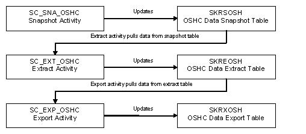
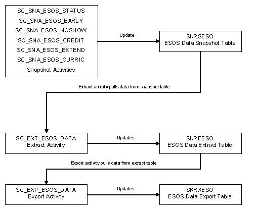
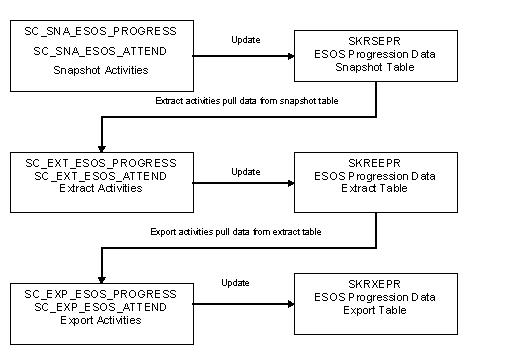
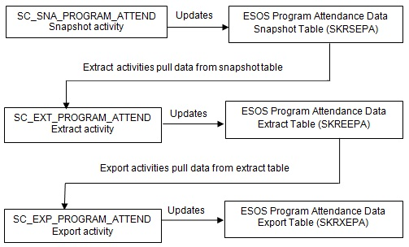
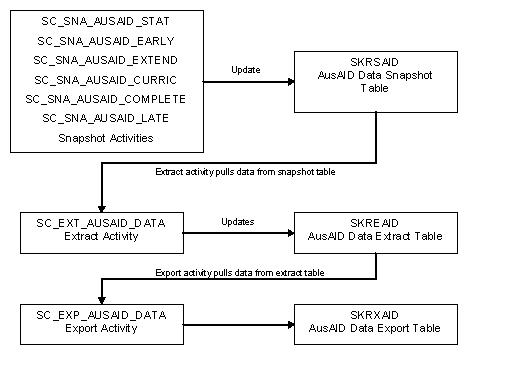
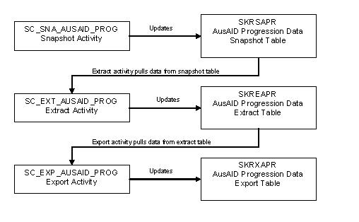

Banner INTTRACKAUS reporting system
Banner® International Student Tracking for Australasia (INTTRACKAUS) offers a method of tracking an international student's enrolment to detect changes that may be reportable.
Enrolment changes can include nominated course, attendance, and academic progress factors. The purpose of INTTRACKAUS is to provide quality data rather than specifically formatted files, because no reporting format has been specified by the Government. This approach also means that the data generated by INTTRACKAUS has wider, more generic usage.
- Procedures for producing reports used in tracking international student progress by government agencies responsible for the welfare and visa status of international students.
- Specific Australian functionality that is unlikely to be able to be used more widely.
- Procedures, tables, and system parameters, for managing Commonwealth Register of Institutions and Courses for Overseas Students (CRICOS) compliance.
- Overseas Student Health Insurance data (OSHC model)
- International Student Compliance data (ESOS model)
- Government-sponsored students data (AusAID model)
Overseas Student Health Insurance data (OSHC model)
The activities that report data on OSHC include all students who have been charged OSHC in any term associated with an academic year.
This also allows you to identify whether the student has paid OSHC to the institution, whether the student has provided evidence of making their own OSHC arrangements, or whether the student has yet to pay OSHC or provide evidence of their own OHSC arrangements.
The typical process flow for OSHC reporting is shown in Figure 1.

International Student Compliance data (ESOS model)
The Educational Services for Overseas Students (ESOS) reports extract data based on changes to enrolment statuses or program (curriculum) details, or extract data for students who have progression or attendance problems.
For ESOS data extracts, there are two groups of data. Group One contains data about the student and their Banner program, and focuses on changes to program enrolments. Group Two includes data about the student, their Banner program, and their Banner courses (subjects, units, modules, and CRNs), and focuses on academic progress and attendance in each unit. The typical process flow for ESOS Group one reporting is shown in Figure 1, the typical flow of ESOS Group two is shown in Figure 2, and the typical flow of Program Attendance tracking is shown in Figure 3



Government-sponsored students data (AusAID model)
The AusAID students are international students who have been sponsored under the Australian Development Scholarship or Australian Leadership Awards Scholarship schemes.
AusAID Reporting provides data extract mechanisms to assist the Institutional Contact Officer to monitor the academic progress of AusAID-sponsored students and update records on the AusAID Student Information Management system (SIMON).
For AusAID data extracts, there are two groups of data. Group One contains data about the student and their Banner program. Group Two includes data about the student, their Banner program, and their Banner courses (subjects, units, modules, and CRNs). As for the ESOS model, Group One focuses on program enrolment changes while Group Two focuses on academic progress. Refer to the following process flow diagrams to learn more about the Group One Reporting and Group Two Reporting, respectively.

